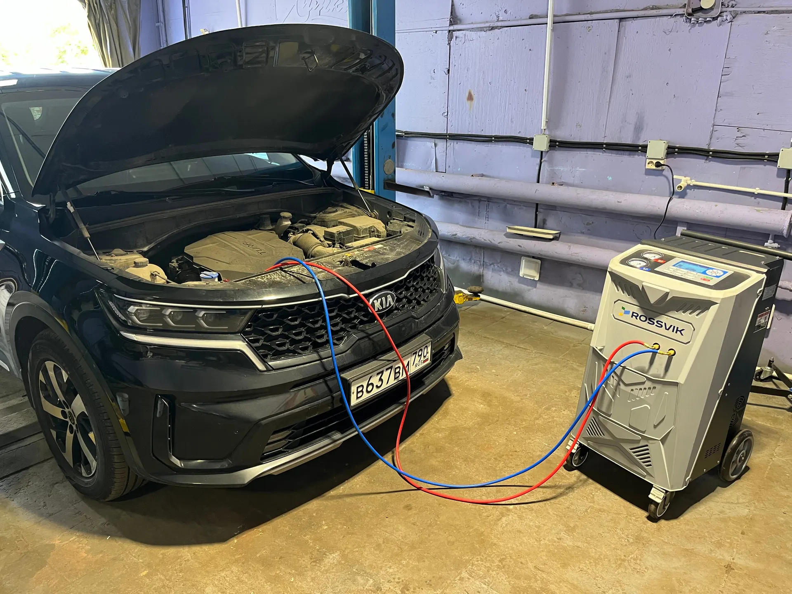
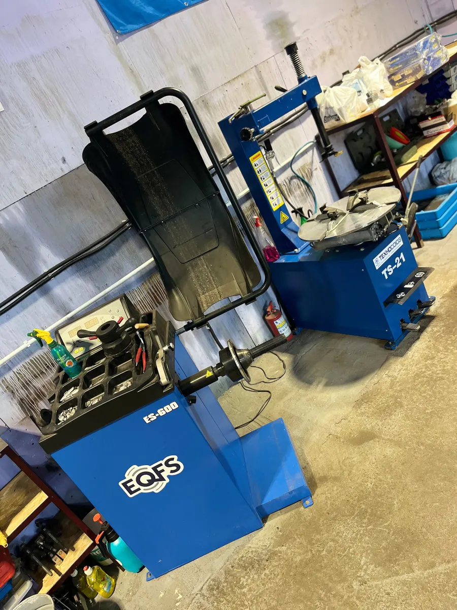
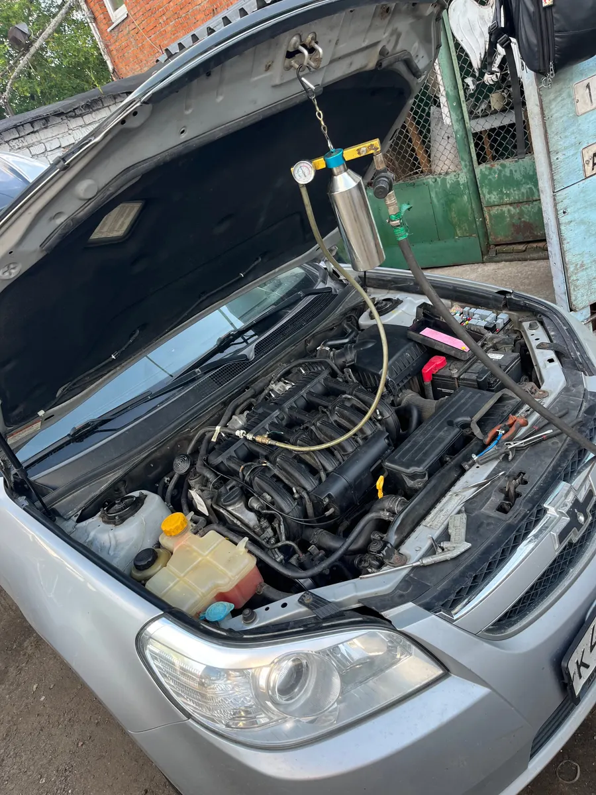
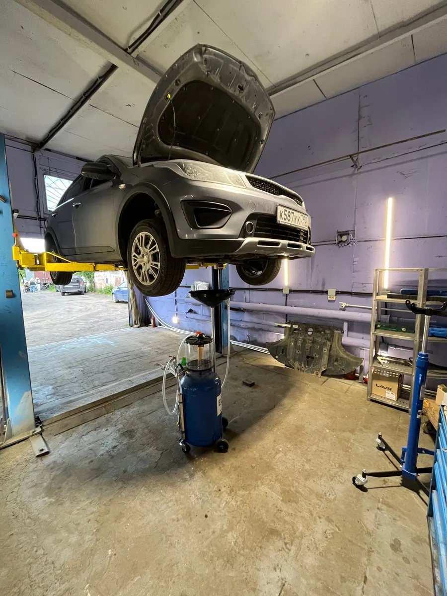

Ремонт, диагностика, шиномонтаж – ежедневно
Автосервис в Подрезково: диагностика и ремонт по записи
Находим неисправность, называем цену и делаем. Работаем ежедневно с 10:00 до 20:00, запись по телефону и в мессенджере.

- Диагностика и ремонт легковых авто
- Шиномонтаж, кондиционеры, вклейка стёкол
- Ежедневно с 10:00 до 20:00
Цены на работы
Цены из прайс-листа сервиса. Для других диаметров колёс и типов машин сумму назовём при записи.
Шиномонтаж, легковой R13–R14
- Снять/поставить 4 колеса1 500 ₽
- Балансировка и снять/поставить 4 колеса1 800 ₽
- Комплексный шиномонтаж, 4 колеса2 800 ₽
Шиномонтаж, кроссовер и джип R13–R14
- Снять/поставить 4 колеса2 000 ₽
- Балансировка и снять/поставить 4 колеса2 500 ₽
- Комплексный шиномонтаж, 4 колеса3 300 ₽
Другие услуги
- Компьютерная диагностикацену назовём при записиуточнить
- Заправка кондиционеров4 000 ₽
- Вклейка стёкол8 000 ₽
Ремонт, ТО и подвеску оцениваем после диагностики и делаем с вашего согласия.
Как проходит визит
- 01
Записались на время
Выбираете день и время, пишете марку, год и что беспокоит.
- 02
Диагностика
Находим неисправность и объясняем, что с машиной.
- 03
Согласовали работы
Называем цену и сроки. Запчасть подбираем вместе.
- 04
Забрали машину
Проверяете результат и оплачиваете работу.



Что отмечают клиенты
Быстро находят неисправность
Из отзыва на Яндекс.Картах: диагностика и результат без долгого ожидания.
Подбирают запчасти не из дорогих
Мастер сам находит нужную деталь и советует, какую брать.
Берутся за сложное
Клиент вспоминает ремонт Fiat 1970 года выпуска – результат его впечатлил.
Отзывы с Яндекс.Карт
«Отличный сервис! истинные профессионалы, для этих ребят нет невыполнимых задач, взялись даже за Фиат 1970 г.в., результат впечатлил, машина едет как будто ее только что купил в салоне)»
Глеб Л. · 17 августа
«Хороший автосервис. Быстро нашли неисправность. Мастер Алексей порекомендовал и сам нашел запчасть не из дорогих. Все сделал быстро и качественно. Спасибо!!!»
Александр Л. · 1 сентября
«Проехался по Подрезково Новоподрезково, оказалась проблема найти шиномонтаж, заехал к ребятам: провели диагностику, нашли прокол, устранили»
Николай Маслянкин · 9 октября
Отзывы с карточки на Яндекс.Картах, без правок.
Контакты
- Адрес
- Центральная ул., 37, Подрезково
- Часы
- ежедневно 10:00–20:00
- Телефон
- +7 (926) 317-77-74